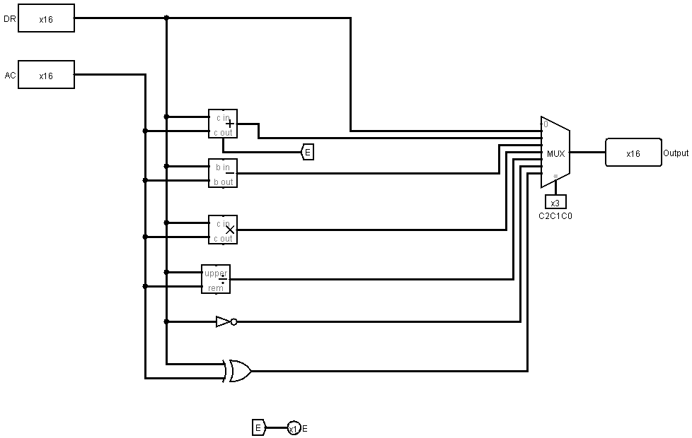

COMPUTER ORGANIZATION · GUC · SPRING 2026
Mano Basic
Computer.
From register transfers to instruction execution.
A Logisim implementation of a Mano-inspired basic computer. A shared 16-bit bus connects registers, RAM, and an ALU; a hardwired control unit coordinates them through the instruction cycle.

The project
Developed as Team 130 coursework, this project follows the Basic Computer architecture associated with M. Morris Mano. The first milestone builds the datapath. The second adds the control signals needed to execute the assigned program automatically.
The course adaptation uses 256 words of RAM, a custom instruction layout, and seven direct-address instructions. XOR and DIV replace the textbook AND and BSA opcodes for this assignment.
- Context
- CSEN/CSIS 402 · German University in Cairo · Spring 2026
- Collaboration
- Team 130 coursework across two milestones
- Datapath
- 16-bit common bus · 256 × 16-bit RAM · six registers
- Control
- Opcode and timing decoders, sequence counter, and logic gates
MILESTONE 01 · DATAPATH
Moving data on a common bus
A multiplexer selects one source for the 16-bit bus using three control lines, S2 S1 S0. Load signals decide which register receives that value. Separate read and write signals control RAM, with AR supplying the memory address.
Address & flow
AR holds the memory address. PC identifies the next instruction. Both use 8 bits for the 256-word address space.
Data & results
DR holds an operand, AC stores arithmetic results, and TR preserves intermediate data. Each is 16 bits.
Instructions
IR holds the 16-bit instruction. Its opcode and address fields drive decoding and address transfers.
| Select | 001 | 010 | 011 | 100 | 101 | 110 | 111 |
|---|---|---|---|---|---|---|---|
| Source | RAM | AR | PC | DR | AC | IR | TR |
Width adapters connect the 8-bit address registers to the wider bus. Named tunnels carry control signals across the main circuit, keeping the wiring readable.
MILESTONE 01 · ALU SUBCIRCUIT
Selecting arithmetic and logic
The ALU takes DR and AC as inputs. A second multiplexer chooses among transfer, addition, subtraction, multiplication, division, complement, and XOR. Three ALU control bits select the result loaded into AC; addition can also update the carry flip-flop, E.


The datapath supports more operations than the automatic instruction subset. The control unit uses the operations required by the assigned loop.
MILESTONE 02 · HARDWIRED CONTROL
Turning instructions into transfers
The upper four instruction bits identify the opcode; bits 4–11 hold the direct memory address. A 4-bit sequence counter produces timing steps through a decoder. The control gates combine each opcode with the current step to drive register loads, increments, memory access, and multiplexer selection.
- T0 · Fetch addressAR receives PC.
- T1 · Fetch instructionIR receives the memory word; PC increments.
- T2 · DecodeThe opcode is decoded and AR receives the address field.
- T3 onward · ExecuteThe selected instruction performs its transfers, then clears the sequence counter for the next fetch.
The instruction subset is LDA, STA, ADD, XOR, DIV, BUN, and ISZ. ISZ increments a memory word and skips the next instruction when it becomes zero, providing the loop's exit condition.
A closer look: division
The ALU divides DR by AC, but the instruction requires the old accumulator divided by a memory operand. The control sequence uses TR to preserve the numerator, exchanges the operands in DR and AC, and then selects division. This makes operand order an explicit part of the register-transfer design.
A flip-flop on the sequence-counter clear path handles Logisim's asynchronous counter-clear behavior. The repository preserves the team's detailed timing steps and Boolean control equations.
Read the control report ↗PUTTING THE COMPONENTS TOGETHER
A loop in machine code
The supplied memory image combines instructions and data. Starting with A = 15, B = 5, and C = 0, the program repeats A ← A + (A XOR B) and C ← C + A / B three times using integer division.
| Iteration | A | C |
|---|---|---|
| 1 | 25 | 5 |
| 2 | 53 | 15 |
| 3 | 101 | 35 |
The loop counter starts at −3. ISZ advances it toward zero, skipping the branch on the last iteration. The final A and C values correspond to 0065 and 0023 in hexadecimal.
These are the assignment's expected results, rather than a claimed independent simulation test. The supplied circuit opens in classic Logisim 2.7.1; its diagrams above are direct exports. This course subset omits interrupts, indirect addressing, and automatic halt, so execution must be stopped manually when the loop finishes.
EXPLORE THE PROJECT
Open the circuit in Logisim
Download the project, open the circuit, and load the included memory image into RAM. The repository includes brief setup steps and explains where to inspect the program's data.
Architecture reference: M. Morris Mano, Computer System Architecture. Course requirements: German University in Cairo, Dr. Milad Ghantous and Dr. Shereen Afifi. Implementation: Team 130, including Adam Ibrahim. The course-specific encoding and instruction subset are documented in the repository.